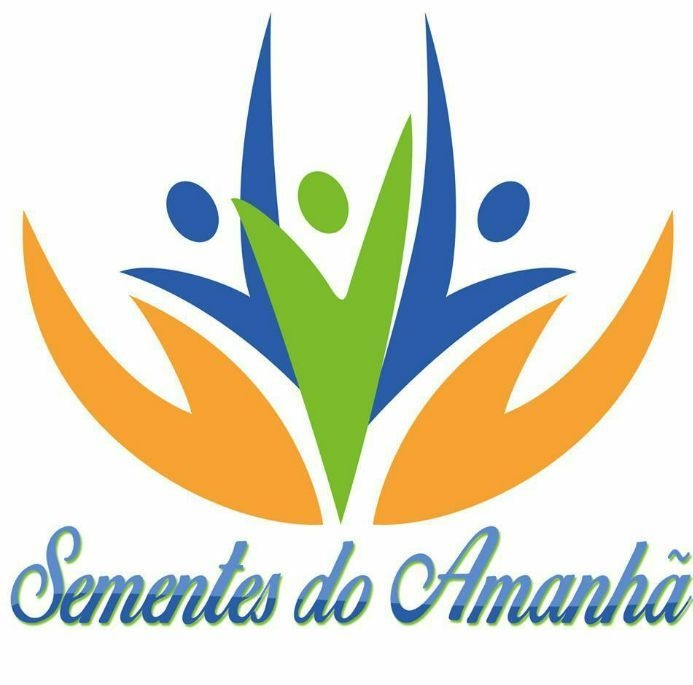

Você pode participar do nosso projeto dedicando tempo e talento. Veja algumas formas de contribuir:
Suas doações ajudam a transformar vidas. Aceitamos diversos tipos de contribuição:
Você pode deixar suas doações em nossos pontos parceiros:
Quer se tornar voluntário ou tirar dúvidas? Fale conosco: